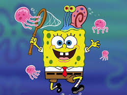
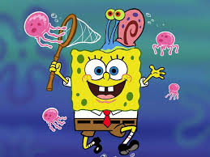

история губки боба
 

Губка Боб Квадратные Штаны — энергичная и оптимистичная жёлтая морская губка, живущая в погруженном в воду ананасе. Губка Боб обладает детским энтузиазмом к жизни, который переносит на свою работу в качестве шеф-повара в ресторане быстрого питания «Красти Краб». Одна из главных целей его жизни — получить водительское удостоверение по вождению в школе управления катерами миссис Пафф, но ему это никогда не удается. Его интересы — ловля медуз, похожим на ловлю бабочек, и пускание мыльных пузырей различных форм. У него есть домашняя морская улитка по кличке Гэри, которая мяукает, как кошка.
все персонажи